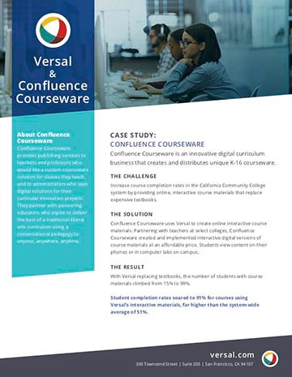

While I'm a video producer at heart, I had a great opportunity to become the Content Marketing Manager at Versal. It was the proverbial "offer you can't refuse," so I didn't. Here's what I learned...
A well designed and executed content marketing strategy improves your sales in the following ways:
Content marketing is the best way to connect with customers and prospects. You aren't just selling goods or services, you're providing value that improves the lives of your customers. Or at least you should be, if you want to be successful. You want to build relationships with your customers. And, you want to make sure they understand all of the value your product holds, so they get the maximum benefit from it.
Every one of the items on this list is a piece of content that helps you build a connection with your customers and prospects.
Generally speaking, there's nothing better than an above-the-fold video that introduces visitors to your company. Why make them hunt for information on your site? People are busy, and you are competing for their time. If you can grab their interest in 90 seconds with a video introduction to your company, do it! With video, you control the tone, the pace, and the personality that creates your brand. Music, motion, voice, and design all combine to tell your story more completely than any other form of content. And how-to videos are vital: they show your customers and prospects how to unlock all of the value your company offers through its products and services.
But video isn't a solution for everything; it's best for introduction and instruction. Think top of funnel and end of funnel. At the top of the funnel, you're using video to create awareness. At the bottom of the funnel, you are providing instruction during evaluation – when prospects are doing a trial – and after purchase. And if you're constantly updating and improving your products and services, your customers should be getting instructional videos about those valuable improvements as they are released.
Once your video has created awareness and introduced your product, white papers and e-books are great for the next step: discovery and evaluation. If your video and web site copy have done their job, your visitors will want to learn more. White papers and e-books are a great content offer that you can use to collect contact information from interested prospects. And, they allow the buyer to download a piece of content to take with them when they leave your site, which means they still have a connection to you after they leave your site.
Use these long-form content formats to show your customers and prospects that you understand their problem and can provide an effective solution. This is a critical step, because when you show an understanding of your prospect's problem, you begin to build trust.
Ultimately, every piece of content your create is an opportunity to build trust. Your videos and website copy should build trust by clearly explaining the abilities of your product. Your white papers and e-books should build trust by showing off your knowledge of the specific industry problems your product solves. And, your case studies should build trust by showing prospects how customers succeeded with your product.
 Case studies are one of the most effective ways to build trust with customers. In fact, it will probably be one of the first things your sales team wants. And if your product works across industry verticals, be sure to create case studies for each industry. You want prospects to be able to relate to the successes of your existing customers.
The case studies themselves aren't difficult to create, and a quick ten minute interview with an existing customer is plenty of time to get the information you need. Record the interviews; this way you can get exact quotes easily. A good case study identifies the customer's challenge, your solution, and the result. Be sure to provide some background information on the customer, too. And make sure you have at least one knock-out quote.
SEO helps your site rank higher for keywords related to your business. When you rank higher for those search results, people are more likely to click through to one of your pages. If you are ranking for the right keywords, then the people who reach your site this way should be quality leads. They have a problem, and they are actively searching for a solution. That means they have intent to make a purchase.
Your blog will probably be the number one way you improve your search engine ranking and increase organic inbound traffic to your site. From a technical standpoint, each blog post should relate to a keyword associated with the industry you are targeting, and all of your blog posts should have clusters of articles that relate to your main keywords. These posts cluster posts should all link back to your main keyword pages. And you're going to need a lot of them, built up over time, to allow search engines to see that your content has value and your site has relevance.
From a content standpoint, you can talk about almost anything that affects your customers and prospects. And because you are creating content that is related, you should crosslink between your posts. This allows your readers to learn more about related issues. And it keeps them on your site longer, which is important because the amount of time people stay on your site is one of the ways search engines measure the value of your content. That also improves your search engine rankings.
Newsletters are also a great way to generate traffic to your site. They should go out to every customer who hasn't opted out of email communications. And if your doing things right, you have email addresses from prospects who downloaded one of your content offers. Make sure these prospects are on your mailing list, too.
The newsletter itself should showcase the best content you've produced each week or month. But don't over-do it. Three or four items is fine. You want people to actually look at the content you're offering, and you want them to click at least one of your links. This is much more likely if they have limited number of choices (and of course, your content has be something they want to read, too). We did one industry specific post, one feature highlight or how-to post, a case study, and a link to schedule a demo.
And don't go crazy with html and graphics. Keep it all text. Make the copy clickable. Make the title the link to the content. And keep the description below the title to one sentence, if possible.